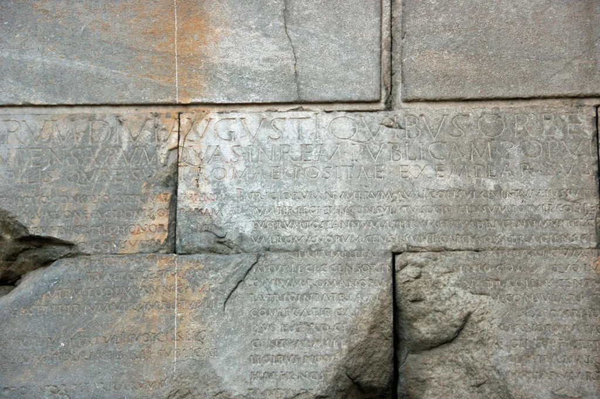

El “Res gestae Divi Augusti” es un documento autobiográfico en el que el emperador romano Augusto detalla sus logros y acciones durante su reinado. También conocido como “Las hazañas del divino Augusto” o simplemente “Res gestae”, este texto fue preparado por Augusto y publicado póstumamente en el año 14 d.C. El documento tiene un carácter propagandístico y estaba destinado a ser una inscripción monumental para glorificar su gobierno y consolidar su legado.
Contenido y Estructura
El texto se divide en cuatro secciones principales:
-
Hazañas militares y diplomáticas: Augusto describe sus victorias militares, campañas y acuerdos diplomáticos que llevaron la paz y la expansión al Imperio Romano.
-
Honores y títulos: Se enumeran los títulos honoríficos, dignidades y reconocimientos que recibió a lo largo de su vida, destacando su posición y autoridad en el estado romano.
-
Proyectos de construcción y beneficencia: Augusto detalla las obras públicas y de infraestructura que financió, incluyendo templos, teatros, y caminos, así como sus contribuciones a la beneficencia pública y al bienestar del pueblo romano.
-
Celebraciones y espectáculos: Se mencionan las festividades y juegos que organizó, subrayando su papel en el entretenimiento y la cultura romana.
Propósito
El propósito del “Res gestae” era doble: por un lado, servía como un registro oficial de los logros de Augusto y, por otro, actuaba como una pieza de propaganda para fortalecer la imagen del emperador como el restaurador de la paz y la prosperidad en Roma. La inscripción se colocó en diversos lugares públicos, siendo la más famosa la inscripción en bronce situada frente a su mausoleo en Roma.
Importancia Histórica
El “Res gestae Divi Augusti” es una fuente invaluable para los historiadores, ya que proporciona una visión directa de cómo Augusto quería ser recordado y cómo se presentaba a sí mismo y a su régimen. Además, es una pieza clave para entender la ideología imperial y la manera en que se construía la imagen del emperador en la sociedad romana.
Ejemplares Conservados
Existen varios ejemplares del texto en diferentes lugares del antiguo Imperio Romano, siendo el más completo el encontrado en el Templo de Roma y Augusto en Ankara, Turquía. Esta versión es conocida como “Monumentum Ancyranum”. El templo tenía una fila de ocho columnas en el frente (octóstilo pseudodíptero), con 15 columnas en los flancos, cuatro columnas separadas delante del pronaos (vestíbulo en la parte delantera de un templo clásico, cerrado por un pórtico y paredes laterales salientes) y dos entre las antae (antes o antas son pilastras que se levantan a ambos lados de las columnas y que están unidas directamente a las paredes del templo) del opisthodomos (el opistodomos u opistódomo es un espacio distinto situado en la parte posterior de los templos griegos). Sólo el núcleo del edificio sigue en pie, conservado gracias a su uso posterior como iglesia cuando el opistódomos se convirtió en ábside. Los muros interiores del pronaos llevan el texto latino de la “Res Gestae Divi Augusti” y la pared exterior sudeste de la naos o cella (la cámara o nave interior de un templo en la arquitectura clásica) el griego, completos salvo algunas zonas dañadas.

Ankara, Ankara Ili, İc Anadolu, Turquía
Hacı Bayram, 06030 Altındağ.
G. A. Harrer, historiador y epigrafista, fue alumno de Abbott y Magie en Princeton antes de comenzar su larga carrera en la Universidad de Carolina del Norte. A pesar de su excesiva atención al servicio administrativo y al trabajo en el aula, Harrer escribió más de 20 artículos académicos sobre historia y epigrafía romana, pero su trabajo académico más conocido puede ser su disertación sobre Siria. Sus obras más populares fueron sus antologías de traducciones del griego y el latín y su manual de mitología, todos escritos con su colega George Howe.
A continuación fragmentos de el ensayo de Harrer “Res Gestae Divi Augusti”, publicado en 1926 en Studies in Philology (Estudios de Filología), julio de 1926, vol. 23, núm. 3 (julio de 1926), págs. 387-403. Traducción de Eduardo Alemán.
El Res Gestae Divi Augusti, una especie de autobiografía de la carrera oficial del primer emperador de Roma, se conoce desde hace mucho tiempo a partir de una copia, con traducción al griego, conservada en las paredes de un Templo de Roma y Augusto en Ancyra (Angora), la capital de Galacia romana en Asia Menor.
[…]
En Ancyra, el texto se divide en dos partes, tres columnas, con el título en la parte superior de todas ellas, a la izquierda de la entrada del santuario, y tres, a la derecha. El encabezamiento nos dice que en Roma el Res Gestae fue tallado sobre dos pilares de bronce, y Suetonio habla de mesas de bronce colocadas ante el mausoleo de Augusto. Ciertamente, la inscripción de Ancyra se hizo a partir de una copia de la inscripción establecida en Roma; así lo indica el encabezamiento. Por lo tanto, se ha supuesto, y con razón, que la disposición de las piedras de Ancyra imitaba en general la de los bronces de Roma. Kornemann señala que en las columnas de la izquierda hay dieciocho capítulos, es decir poco más de la mitad, de los treinta y cinco, y que la sección de la derecha comienza con la primera línea de un capítulo. Ha observado, también, que a la izquierda hay 135 líneas del texto, y a la derecha, 136, omitiendo el resumen, y que estas líneas están agrupadas en las columnas de la izquierda, 46: 46: 43, y a la derecha, 54: 54: 28. Piensa que se trata de una disposición muy incómoda de las columnas y supone una división en las tablas de Roma de 45: 45: 45 y 46: 45: 45, respectivamente. Supone también que el resumen se omitió en Roma, evidentemente supone que las líneas eran individualmente idénticas en Roma y Ancyra, y finalmente supone con Klaeyle que la primera columna de la izquierda se hizo igual a la primera de la derecha en número de líneas al tener más de es el encabezado, “Res Gestae Divi Augusti”. Este último supuesto es deficiente por dos razones; en primer lugar, en las inscripciones romanas un título suele tener letras mucho más grandes, lo que haría que la primera columna pareciera más larga que la segunda; de nuevo, en las inscripciones romanas los encabezamientos suelen ocupar varias columnas, si la inscripción está cortada en columnas, y dos o tres columnas sobre bronce o piedra forman un grupo favorito, como es la disposición en Ancyra. Además, el agrupamiento de Kornemann para el original en Roma generaría bastante confusión debido a cierta simetría que se ve en el texto de Ancyra: las columnas 1 y 2 de la izquierda comienzan cada una con la primera línea de un capítulo, la columna 3 no; las columnas 4 y 5 (son la 1.ª y 2.ª a la derecha) comienzan cada una con la primera línea de un capítulo, la columna 6 no. Además, la columna 3, la última de la izquierda, tiene 43 líneas, y la columna 6, la última de la derecha, tiene exactamente ese número, si incluimos el resumen.
Ese resumen ha sido asignado unánimemente a algún griego provincial de Ancyra, desde que Mommsen así lo decidió, porque estaba mal escrito, se calculaba el dinero en denarios y se refería a ciudades de provincia. Por supuesto, no fue escrito por Augusto, ya que está en tercera persona, pero aparte de eso no se ha presentado ninguna razón de peso para su origen provincial. El cálculo en denarios se encuentra en el documento principal, aunque prevalece el de sestercios. En cuanto a la referencia a las ciudades provinciales, es una expresión corta sin nombre de ciudad, mientras que la mayor parte del resumen se refiere a una mención de los edificios en Roma y los gastos para entretenimientos y regalos a los senadores, amigos, la plebe y el ejército - temas que obviamente no son de especial interés para los provincianos. Hardy llama la atención sobre el hecho de que habría sido bastante difícil para una persona que se encontraba en una provincia obtener algunos de los elementos de información que figuran en el resumen. Seguramente el resumen pudo haberse originado en Roma y haber aparecido en las tablas de bronce.
Ahora bien, la columna 5 en Ancyra, al igual que la columna 2, termina con la primera línea de un capítulo, lo que hace que la siguiente columna comience de manera algo incómoda con la segunda línea del capítulo. El propósito aparente de la disposición en cada caso es hacer que la columna que termina así coincida exactamente en el número de líneas con la columna anterior y hacer que la última columna a la izquierda y la última a la derecha sean iguales entre sí. Obviamente, todo el arreglo en Ancyra es el resultado de un estudio muy cuidadoso y hábil del texto que se va a cortar y no es en absoluto extraño como diría Kornemann.
[…]
Ahora es posible sugerir un árbol genealógico simple para nuestros textos existentes. Se pierde el autógrafo de la “Res Gestae”. El arquetipo era la copia de los bronces de Roma. De él se hizo una copia y se envió a Ancyra, donde se hizo una copia para los canteros, y su copia se encuentra hoy en las piedras. Se preparó otra copia del manuscrito enviado a Ancyra para su uso en Antioquía y, gracias a Ramsay y Robinson, ahora se conoce su copia en piedra. Las copias en piedra están, por lo tanto, posiblemente a tres pasos de distancia de los bronces de Roma. Pero comparando sus lecturas podemos llegar a un texto que está a sólo una distancia de la inscripción ante la tumba de Augusto, aunque debemos recordar que la piedra de Ancyra no está completa y que el texto de Antioquía está fragmentado.